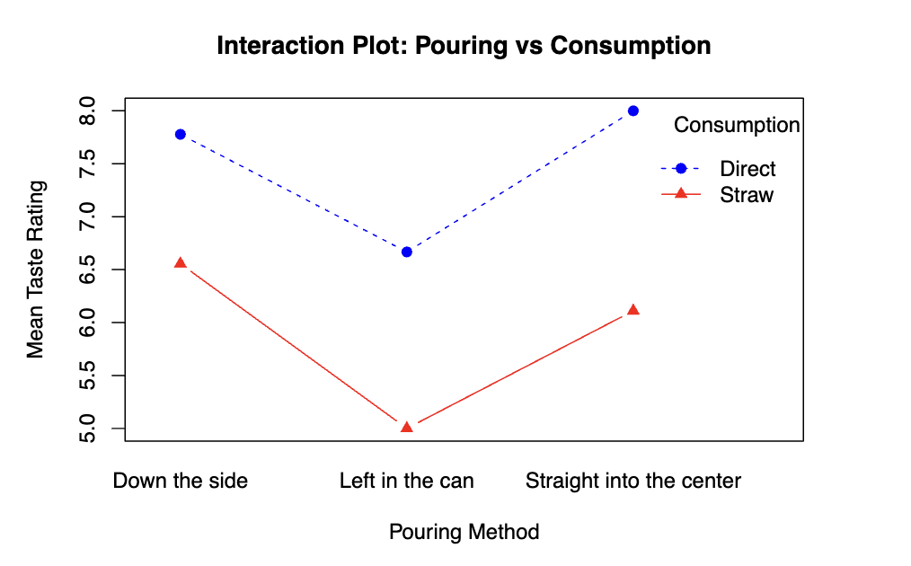
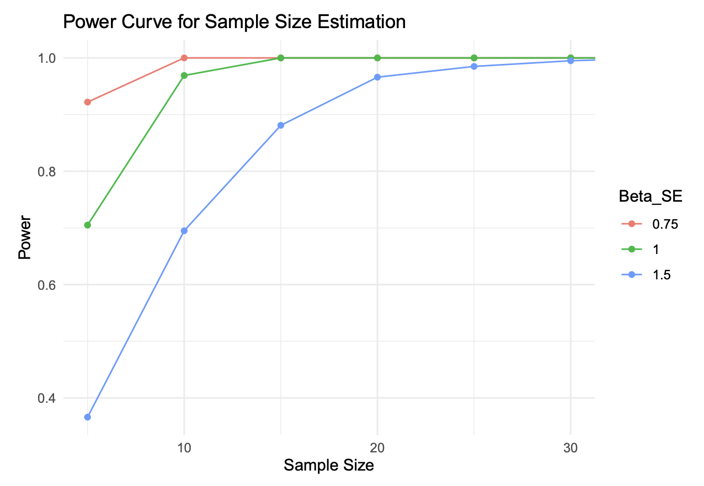

Soda Taste Test:
Factorial Design with Blocking
Designed and ran a blocked 3×2 factorial experiment to test whether pouring and drinking methods affect soda taste perception. When Shapiro-Wilk rejected normality, pivoted to permutation tests, running 10,000 shuffles per block to build a valid empirical null distribution and recover clean inference.
The Question
Taste is about more than flavor. Research suggests carbonation affects sweetness perception, and serving method directly affects carbonation. This experiment tests whether pouring soda differently or drinking through a straw changes how much people enjoy it.
The design is a blocked 3×2 factorial: 3 pouring methods crossed with 2 drinking methods. Each of the 9 participants tasted all 6 combinations in a randomized order, serving as their own control to remove individual taste bias.
Why Permutation Tests?
The original plan was standard ANOVA. But Shapiro-Wilk returned W = 0.954, p = 0.038, rejecting normality of residuals at α = 0.05. The analysis instead used permutation tests, shuffling taste ratings within each participant block 10,000 times to build an empirical null distribution with no distributional assumptions.
Key Findings
Both pouring method (p = 0.0004) and consumption method (p < 0.0001) significantly affected taste ratings. The interaction was not significant (p = 0.664), meaning the two factors act independently. Drinking directly added about 1.6 points regardless of how the soda was poured.
| Pouring Method | Consumption | Mean Rating | vs. Grand Mean |
|---|---|---|---|
| Straight into center | Direct | +1.31 ↑ | |
| Down the side | Direct | +1.09 ↑ | |
| Left in the can | Direct | −0.02 | |
| Down the side | Straw | −0.13 | |
| Straight into center | Straw | −0.58 | |
| Left in the can | Straw | −1.69 ↓ |
Ratings on a 0–10 scale. Grand mean = 6.69 across all 54 observations.

The lines for "Direct" and "Straw" are nearly parallel, visually confirming the permutation result (p = 0.664). The benefit of drinking directly is additive regardless of pouring method.
| Effect | Permutation p-value | Significant? |
|---|---|---|
| Consumption Method | < 0.0001 | Yes (α = 0.05) |
| Pouring Method | 0.0004 | Yes (α = 0.05) |
| Pouring × Consumption | 0.664 | No, additive |
Based on 10,000 within-block shuffles per test. Permutation p-values are used because Shapiro-Wilk rejected normality (p = 0.038).

Monte Carlo simulation shows we achieve >80% power (red line) as long as the standard error of the effect size stays below 1.0. With our n=9 blocks, we are well-powered for moderate effects.
Why a Blocked Factorial Design?
A factorial design lets you test multiple factors simultaneously and detect interactions, such as whether the effect of pouring method changes depending on how you drink it. Testing them separately in two experiments would miss this.
Adding a blocking structure (each participant tries all 6 conditions) removes individual-level taste variation entirely. Since some people consistently rate things higher or lower, having them serve as their own controls isolates the treatment effects far more precisely than a between-subjects design with 9 different people per condition would.
Order effects were mitigated by randomizing the sequence of conditions for each participant, with water provided between each sample to reset the palate.
The Permutation Test Logic
The core idea: if pouring and consumption method truly have no effect, then within any participant, any assignment of taste ratings to conditions is equally likely. So we can simulate the null distribution by randomly shuffling ratings within each block.
- For each participant, randomly permute their 6 taste ratings among the 6 conditions
- Fit ANOVA on the permuted dataset and record the F-statistic
- Repeat 10,000 times to build the empirical null distribution
- p-value = proportion of permuted F-statistics ≥ observed F
This was done for the overall model, then repeated separately for each factor and the interaction term, yielding p-values that are valid regardless of the violated normality assumption.
| Assumption | Test / Evidence | Result | Verdict |
|---|---|---|---|
| Normality | Shapiro-Wilk: W = 0.954, p = 0.038. Left-skewed residuals, tail deviations in Q-Q plot. | p < 0.05 | VIOLATED |
| Equal Variance | Residuals vs. fitted values showed unequal spread across groups. | Inconclusive | CONCERN |
| Independence | Slight pattern in residuals vs. collection order, suggesting possible palate fatigue. | Mild pattern | MILD CONCERN |
Interpreting the Non-Significant Interaction
A null interaction result (p = 0.664) is a real finding, not a failure. It says the two factors are additive: the benefit of drinking directly is the same roughly 1.5 point boost whether the soda was poured straight, down the side, or left in the can. You don't need to optimize which combination you use; each improvement works independently.
This simplifies the practical takeaway considerably compared to a significant interaction, which would have required condition-specific recommendations.
# ── Overall model permutation test ──────────────────────────
perm_f <- numeric(10000)
reps <- 10000
blocks <- unique(soda_data$Participant)
for(i in 1:reps){
soda_perm <- soda_data
# shuffle ratings within each participant block
for(curr_block in blocks){
ind <- which(soda_data$Participant == curr_block)
soda_perm$Taste_Rating[ind] <- sample(soda_perm$Taste_Rating[ind])
}
perm_f[i] <- summary(aov(
Taste_Rating ~ Pouring_Method * Consumption_Method,
data = soda_perm
))[[1]][1, 4]
}
f_actual <- summary(aov(
Taste_Rating ~ Pouring_Method * Consumption_Method,
data = soda_data
))[[1]][1, 4]
perm_p <- sum(perm_f >= f_actual) / reps # p = 0.0002
# ── Per-factor permutation tests ────────────────────────────
perm_f_pouring <- numeric(reps)
perm_f_consumption <- numeric(reps)
perm_f_interaction <- numeric(reps)
for(i in 1:reps){
soda_perm <- soda_data
for(curr_block in blocks){
ind <- which(soda_data$Participant == curr_block)
soda_perm$Taste_Rating[ind] <- sample(soda_perm$Taste_Rating[ind])
}
aov_s <- summary(aov(
Taste_Rating ~ Pouring_Method * Consumption_Method,
data = soda_perm
))[[1]]
perm_f_pouring[i] <- aov_s[1, 4] # Pouring Method F
perm_f_consumption[i] <- aov_s[2, 4] # Consumption F
perm_f_interaction[i] <- aov_s[3, 4] # Interaction F
}
# Observed F-statistics from real data
aov_obs <- summary(aov(
Taste_Rating ~ Pouring_Method * Consumption_Method,
data = soda_data
))[[1]]
p_pouring <- mean(perm_f_pouring >= aov_obs[1, 4]) # 0.0002
p_consumption <- mean(perm_f_consumption >= aov_obs[2, 4]) # <0.0001
p_interaction <- mean(perm_f_interaction >= aov_obs[3, 4]) # 0.655
# ── Fit linear model ─────────────────────────────────────────
model_norm <- lm(
Taste_Rating ~ Pouring_Method + Consumption_Method +
Pouring_Method * Consumption_Method,
data = soda_data
)
# Residual histogram: look for skew or multi-modality
hist(model_norm$residuals,
xlab = "residuals",
main = "Soda Data Residuals")
# → left-skewed; not the bell curve ANOVA assumes
# Q-Q plot: deviations at tails signal non-normality
qqnorm(model_norm$residuals)
qqline(model_norm$residuals)
# → clear lower-tail deviation visible
# Shapiro-Wilk formal test
shapiro_result <- shapiro.test(model_norm$residuals)
# → W = 0.954, p = 0.038
# → reject normality at α = 0.05 → ANOVA invalid
kable(data.frame(
Statistic = round(shapiro_result$statistic, 3),
P_Value = round(shapiro_result$p.value, 3)
), col.names = c("Shapiro-Wilk W", "P-Value"))
# Residuals vs collection order: check independence
x <- 1:length(model_norm$residuals)
plot(model_norm$residuals ~ x,
ylab = "residuals",
main = "Residuals vs Order of Data Collection")
# → slight downward pattern around obs 20–30
# → possible palate fatigue effect
power_factorial_32 <- function(beta_mean, beta_se, replicates,
iter = 1000, alpha = 0.05){
# beta_mean: 6 coefficient estimates from fitted model
# beta_se: uncertainty in those estimates
# replicates: sample size to test
if(length(beta_mean) != 6) stop("beta_mean must have 6 values")
if(length(beta_se) != 6) stop("beta_se must have 6 values")
# Generate design matrix for 3×2 factorial
sim_data <- data.frame(
outcome = rep(NA, (6 * replicates)),
x1 = rep(c(0,0,0,1,1,1), replicates),
x2 = rep(c(0,0,1,0,0,1), replicates),
x3 = rep(c(0,1,0,0,1,0), replicates)
)
pvals <- NA
for(j in 1:iter){
for(i in 1:nrow(sim_data)){
# Draw random betas around fitted estimates
beta <- rnorm(n = 8, mean = beta_mean, sd = beta_se)
sim_data$outcome[i] <- beta[1] +
beta[2] * sim_data$x1[i] +
beta[3] * sim_data$x2[i] +
beta[4] * sim_data$x3[i] +
beta[5] * sim_data$x1[i] * sim_data$x2[i] +
beta[6] * sim_data$x1[i] * sim_data$x3[i]
}
model1 <- lm(outcome ~ x1 + x2 + x3 + x1*x2 + x1*x3,
data = sim_data)
f <- summary(model1)$fstatistic
pvals[j] <- pf(f[1], f[2], f[3], lower.tail = FALSE)
}
# Power = proportion of runs rejecting H₀
power <- sum(pvals < alpha) / iter
return(power)
# → >80% power at n=9 for Beta_SE ≤ 1.0
}